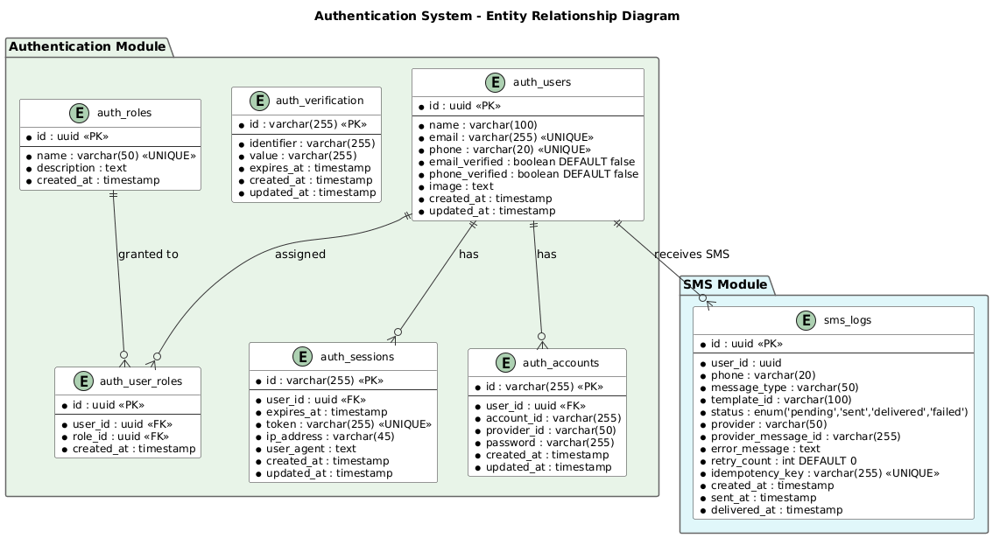

Database Design Document
Authentication Module
AUTH
1. Overview
1.1 Purpose
This document defines the database design for the Authentication module (database: auth_db).
1.2 Requirements Addressed
| SRS Requirement | Database Solution |
|---|
| FR-001 Registration | auth_users, auth_accounts tables |
| FR-002 Login | auth_users, auth_sessions tables |
| FR-008/FR-009 Verify | auth_verification table |
| FR-011 Roles | auth_roles, auth_user_roles tables |
1.3 ERD Diagram

Figure 1: Authentication ERD
2. Schema Design
2.1 Database Strategy
| Aspect | Decision |
|---|
| Database | auth_db |
| Table naming | auth_<table_name> |
| Primary keys | UUID (via gen_random_uuid()) |
| Timestamps | created_at, updated_at with NOW() default |
2.2 Table: auth_users
| Column | Type | Nullable | Default | Description |
|---|
| id | uuid | NO | gen_random_uuid() | Primary key |
| email | varchar(255) | YES | NULL | Unique email |
| phone | varchar(20) | YES | NULL | Unique phone |
| name | varchar(100) | NO | - | Display name |
| password_hash | varchar(255) | YES | NULL | bcrypt hash |
| email_verified | boolean | NO | false | Email verified flag |
| phone_verified | boolean | NO | false | Phone verified flag |
| status | varchar(20) | NO | active | active, inactive, banned |
| created_at | timestamp | NO | NOW() | Creation time |
| updated_at | timestamp | NO | NOW() | Last update time |
CREATE TABLE auth_users (
id UUID PRIMARY KEY DEFAULT gen_random_uuid(),
email VARCHAR(255) UNIQUE,
phone VARCHAR(20) UNIQUE,
name VARCHAR(100) NOT NULL,
password_hash VARCHAR(255),
email_verified BOOLEAN NOT NULL DEFAULT false,
phone_verified BOOLEAN NOT NULL DEFAULT false,
status VARCHAR(20) NOT NULL DEFAULT 'active'
CHECK (status IN ('active', 'inactive', 'banned')),
created_at TIMESTAMP NOT NULL DEFAULT NOW(),
updated_at TIMESTAMP NOT NULL DEFAULT NOW(),
CONSTRAINT auth_users_email_or_phone CHECK (email IS NOT NULL OR phone IS NOT NULL)
);
2.3 Table: auth_sessions
CREATE TABLE auth_sessions (
id UUID PRIMARY KEY DEFAULT gen_random_uuid(),
user_id UUID NOT NULL REFERENCES auth_users(id) ON DELETE CASCADE,
token VARCHAR(500) NOT NULL,
refresh_token VARCHAR(500),
ip_address VARCHAR(45),
user_agent TEXT,
expires_at TIMESTAMP NOT NULL,
created_at TIMESTAMP NOT NULL DEFAULT NOW()
);
2.4 Table: auth_accounts
CREATE TABLE auth_accounts (
id UUID PRIMARY KEY DEFAULT gen_random_uuid(),
user_id UUID NOT NULL REFERENCES auth_users(id) ON DELETE CASCADE,
provider VARCHAR(50) NOT NULL,
provider_id VARCHAR(255) NOT NULL,
created_at TIMESTAMP NOT NULL DEFAULT NOW(),
CONSTRAINT auth_accounts_provider_unique UNIQUE (provider, provider_id)
);
2.5 Table: auth_verification
CREATE TABLE auth_verification (
id UUID PRIMARY KEY DEFAULT gen_random_uuid(),
user_id UUID NOT NULL REFERENCES auth_users(id) ON DELETE CASCADE,
code VARCHAR(10) NOT NULL,
type VARCHAR(20) NOT NULL
CHECK (type IN ('email', 'phone', 'password_reset')),
expires_at TIMESTAMP NOT NULL,
used BOOLEAN NOT NULL DEFAULT false,
created_at TIMESTAMP NOT NULL DEFAULT NOW()
);
2.6 Table: auth_roles
CREATE TABLE auth_roles (
id UUID PRIMARY KEY DEFAULT gen_random_uuid(),
name VARCHAR(50) NOT NULL UNIQUE,
description TEXT,
permissions JSONB DEFAULT '[]',
created_at TIMESTAMP NOT NULL DEFAULT NOW()
);
2.7 Table: auth_user_roles
CREATE TABLE auth_user_roles (
id UUID PRIMARY KEY DEFAULT gen_random_uuid(),
user_id UUID NOT NULL REFERENCES auth_users(id) ON DELETE CASCADE,
role_id UUID NOT NULL REFERENCES auth_roles(id) ON DELETE CASCADE,
assigned_at TIMESTAMP NOT NULL DEFAULT NOW(),
assigned_by UUID REFERENCES auth_users(id),
CONSTRAINT auth_user_roles_unique UNIQUE (user_id, role_id)
);
3. Indexes
-- auth_users
CREATE INDEX idx_auth_users_email ON auth_users(email);
CREATE INDEX idx_auth_users_phone ON auth_users(phone);
CREATE INDEX idx_auth_users_status ON auth_users(status);
-- auth_sessions
CREATE INDEX idx_auth_sessions_user_id ON auth_sessions(user_id);
CREATE INDEX idx_auth_sessions_token ON auth_sessions(token);
CREATE INDEX idx_auth_sessions_expires ON auth_sessions(expires_at);
-- auth_verification
CREATE INDEX idx_auth_verification_user_id ON auth_verification(user_id);
CREATE INDEX idx_auth_verification_code ON auth_verification(code);
CREATE INDEX idx_auth_verification_type ON auth_verification(type);
-- auth_user_roles
CREATE INDEX idx_auth_user_roles_user_id ON auth_user_roles(user_id);
CREATE INDEX idx_auth_user_roles_role_id ON auth_user_roles(role_id);
4. Migrations
4.1 Migration Strategy
| Aspect | Decision |
|---|
| Tool | Drizzle ORM (drizzle-kit) |
| Database | auth_db |
| Rollback | Required for every migration |
4.2 Migration Order
| Order | Migration | Description |
|---|
| 1 | 001_create_users | Create auth_users table |
| 2 | 002_create_sessions | Create auth_sessions table |
| 3 | 003_create_accounts | Create auth_accounts table |
| 4 | 004_create_verification | Create auth_verification table |
| 5 | 005_create_roles | Create auth_roles table |
| 6 | 006_create_user_roles | Create auth_user_roles table |
| 7 | 007_create_indexes | Create all indexes |
5. Data Dictionary
| Table | Description | Resolves | Est. Rows (Y1) |
|---|
| auth_users | User accounts | FR-001, FR-002 | 10,000 |
| auth_sessions | User sessions and tokens | FR-002, FR-003, FR-004 | 50,000 |
| auth_accounts | OAuth provider accounts | FR-001 | 10,000 |
| auth_verification | Email/phone verification codes | FR-005, FR-006, FR-008, FR-009 | 20,000 |
| auth_roles | User roles | FR-011 | 10 |
| auth_user_roles | User-role assignments | FR-011 | 15,000 |